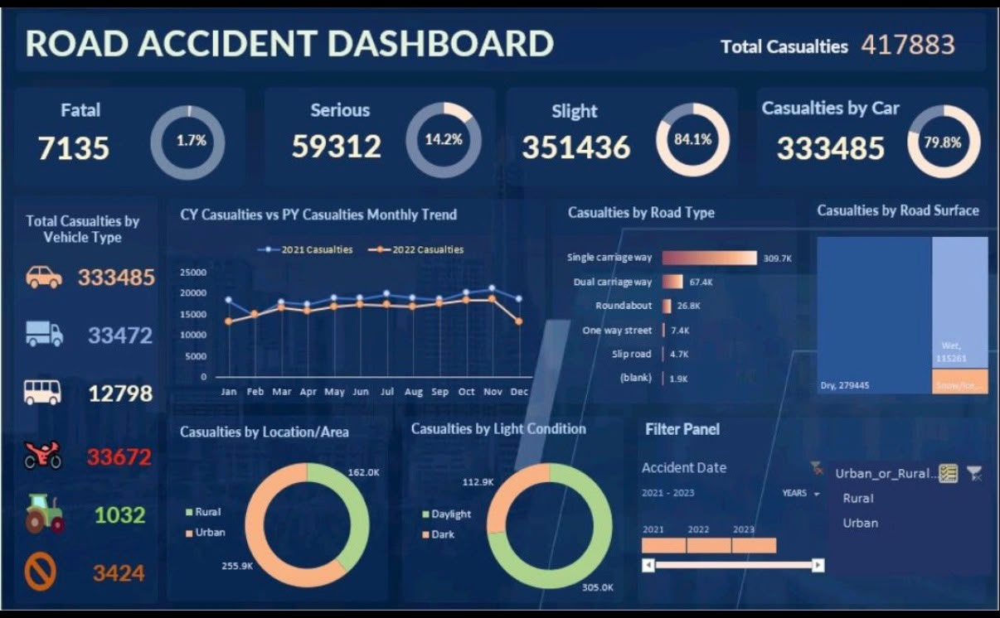

Turning messy data into decisions —
dashboards people actually use.
I'm Awatef, a data analyst working across Power BI, Excel, SQL and Python. I clean the messy stuff, model it properly, and build dashboards that surface the one number a stakeholder actually needs.
Tools I build with
The core toolkit behind every project below — from raw data to a dashboard someone can act on.
BI Dashboarding
- Power BI (DAX, data modeling, drill-through)
- Excel (pivot tables, dashboards, formulas)
- Tableau
DB Data & Querying
- SQL (joins, aggregation, window functions)
- Data cleaning & transformation
- Relational data modeling
PY Analysis
- Python (pandas, data wrangling)
- Exploratory data analysis
- Reporting & storytelling with data
Selected work
Five projects, five domains — each one a full pass from raw data to a dashboard built to answer a real question.

Road Accident Dashboard
A Power BI dashboard analyzing three years of UK road casualty data, breaking severity, vehicle type, road conditions and time trends down into a single filterable view.

HR Analytics Dashboard
An attrition-focused workforce dashboard, segmenting 1,470 employee records by department, age band, education field and job satisfaction to find where the company was actually losing people.
Cafe Sales Dashboard
Built from a deliberately messy raw transactions table (dirty_cafe_sales) — cleaned, modeled and turned into a sales dashboard tracking revenue, order volume and item mix over time.
AdventureWorks Finance Dashboard
A budget-vs-actual FP&A dashboard built on the AdventureWorks finance model, comparing planned and actual spend across departments and organizations with a full variance bridge.
Gym Management Dashboard
A membership and operations dashboard modeled across seven related tables — members, attendance, trainers, equipment and subscriptions — delivered as both an Excel workbook and a Power BI report.